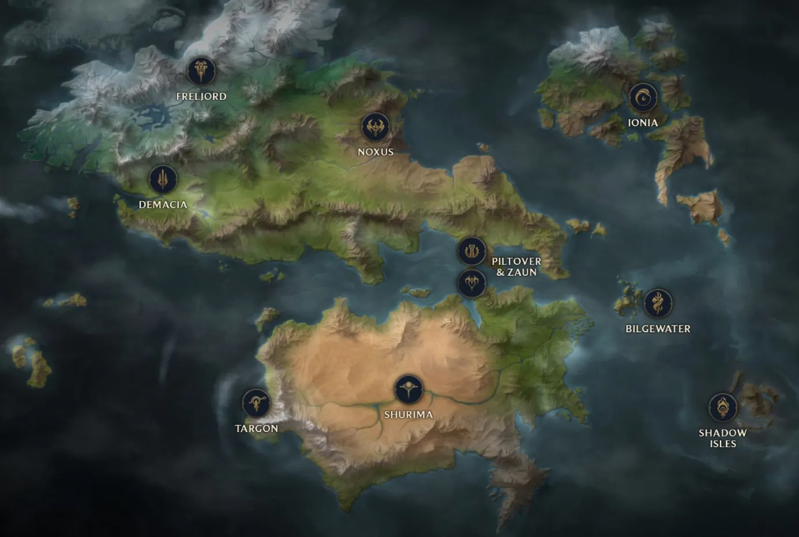
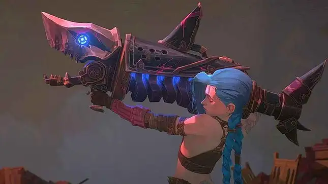
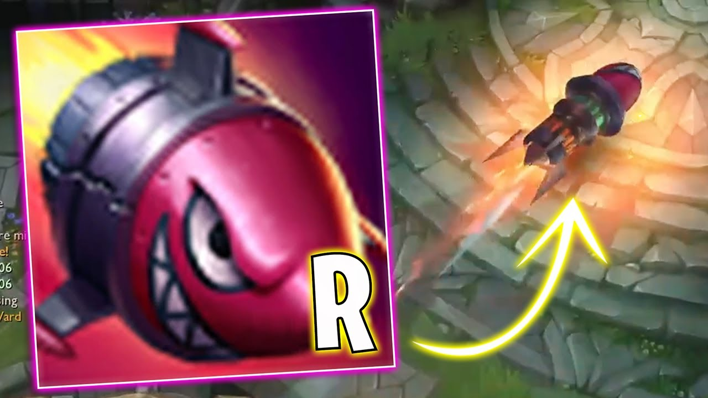
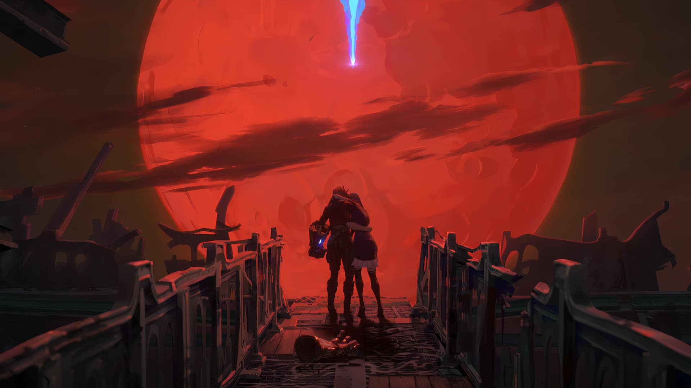
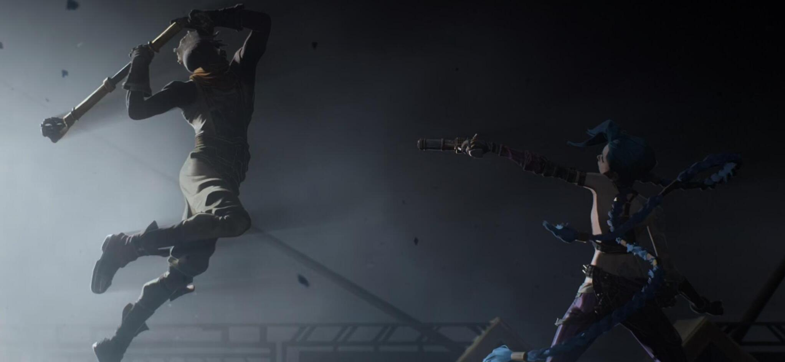
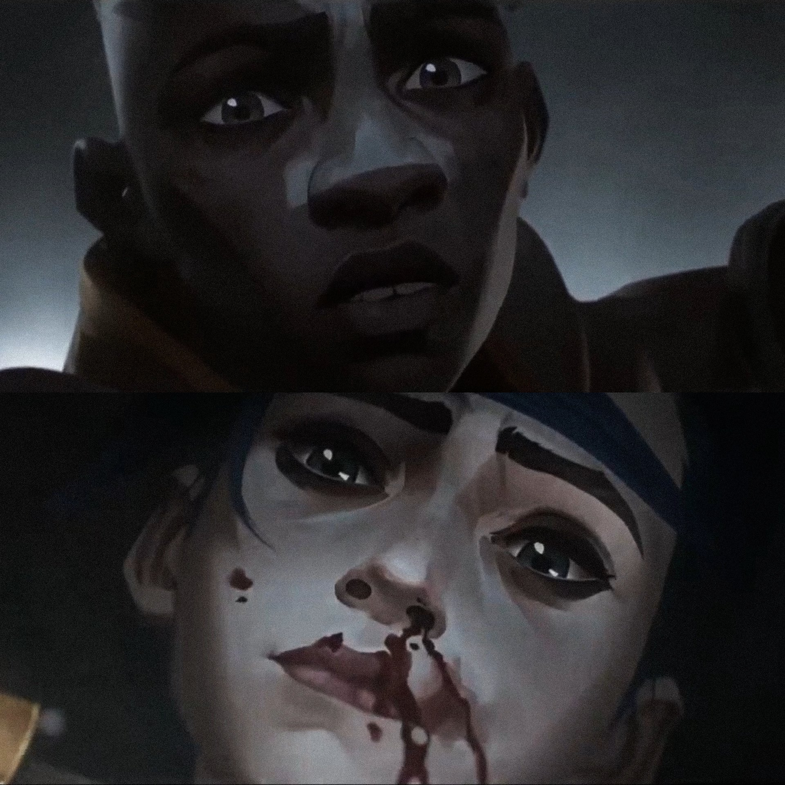

Runeterra est le monde fictif où se déroule l'univers de la série Arcane. C'est un monde riche et diversifié, composé
de régions uniques, chacune ayant sa propre culture, sa géographie, sa magie et ses intrigues politiques. Ces régions
sont souvent en conflit ou en alliance, ce qui donne lieu à de nombreuses histoires captivantes.

Carte de Runeterra avec Piltover et Zaun au centre
La fin de la saison 1 d'Arcane atteint son apogée avec un moment tragique et chargé d'émotion. Jinx, en proie à une
crise identitaire et sous l'influence des manipulations de Silco, prend une décision qui symbolise son basculement
définitif dans la folie. Après une confrontation tendue avec Vi et Caitlyn, Jinx utilise un lance-roquettes alimenté par
la technologie hextech et tire une roquette directement sur le Conseil de Piltover, où les conseillers venaient tout juste
de voter pour accorder l'indépendance à Zaun.
La scène se termine sur un cliffhanger*, montrant la roquette se diriger vers la fenêtre du bâtiment du Conseil, tandis
que des membres clés, comme Jayce et Mel, sont pris au dépourvu. Cette explosion imminente symbolise la rupture
irréversible entre Piltover et Zaun, et marque une escalade dramatique dans les tensions politiques et personnelles.
Cliffhanger* : technique narrative utilisée à la fin d’un épisode, d’un chapitre ou d’un film pour maintenir le suspense
et inciter le spectateur ou le lecteur à découvrir la suite.

Cette scène est une allusion évidente à la capacité ultime
de Jinx dans le jeu vidéo League of Legends, intitulée :
SUPER ROQUETTE DE LA MORT !


Scène finale de la saison 1
Jinx VS Ekko
Le combat entre Jinx et Ekko dans la saison 1 d'Arcane est l'un des moments les plus intenses et émotionnels de la
série. Il se déroule sur le pont séparant Piltover et Zaun.
Jinx, désormais consumée par sa folie et son désir de chaos, affronte Ekko, un ancien ami d'enfance et un symbole
d'espoir pour Zaun. Le combat est marqué par une chorégraphie fluide et dynamique, mêlant des éléments de
technologie hextech et de combat de rue.
Le combat est aussi un affrontement de valeurs : Ekko tente de sauver la Jinx qu'il a connue, tandis que Jinx cherche
à prouver sa puissance et à briser les liens du passé. La confrontation se termine lorsqu’Ekko parvient à prendre le
dessus sur Jinx et l’épargne par la suite.


Ma meilleure ennemie
La scène de dance entre Powder et Ekko dans le monde alternatif dans la saison 2 est sans doute un des momenst
les plus appréciés par les spectateurs.
Un soir de fête, Ekko et Powder se retrouve pour dancer et célébrer leur amour sur une toute nouvelle chanson de
Stromae et Pomme, spécialement réalisée pour la saison 2 d’Arcane. Cette chanson est tellement appréciée qu’elle
cumule environ 120 millions d’écoutes sur Spotify 3 semaines après la sortie de l’acte III.
La scène est d’ailleurs montrée en 4 images par seconde, 4 étant le nombre maximales de secondes où Ekko peut
remonter le temps.